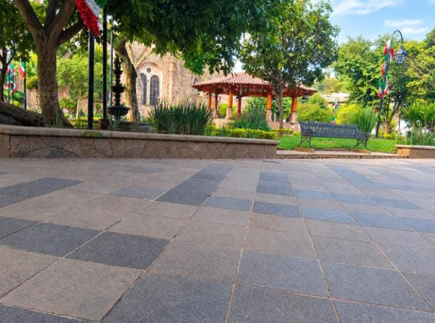
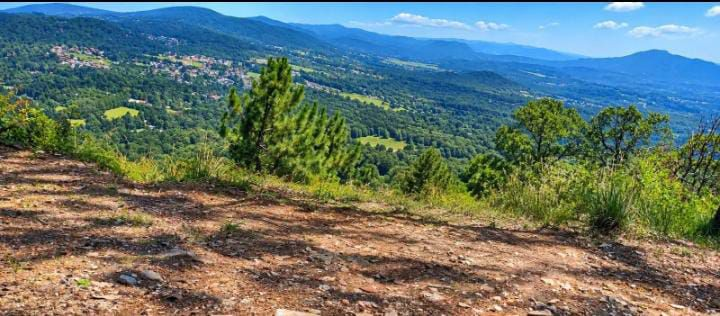
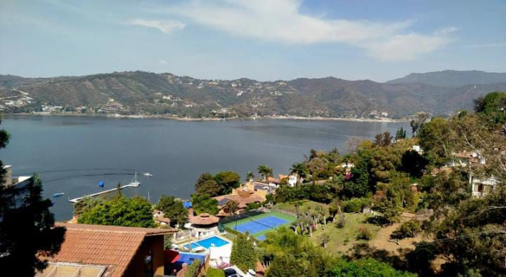
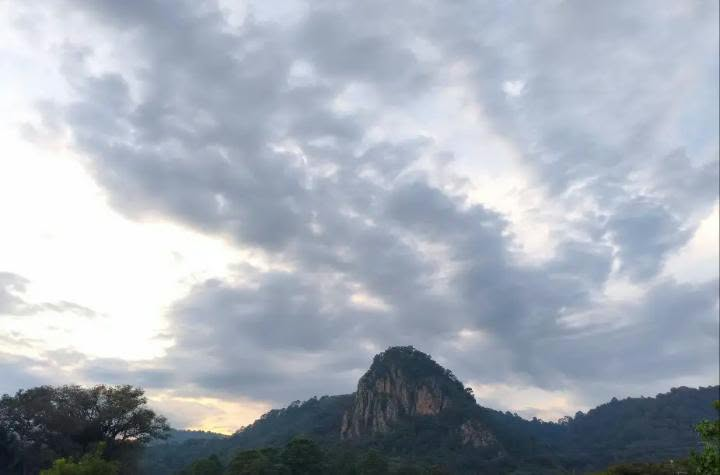
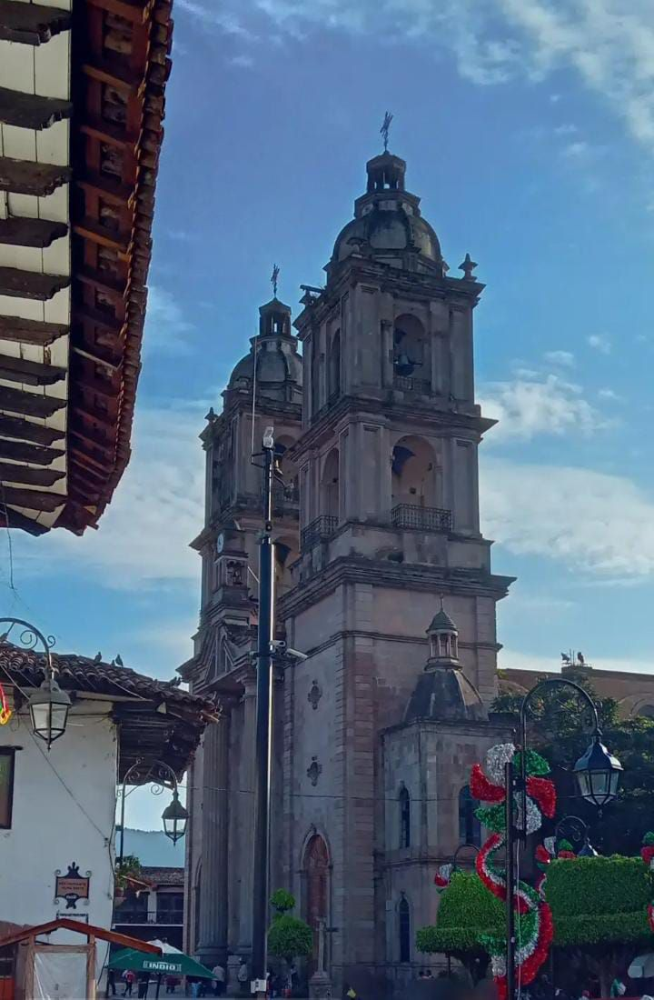
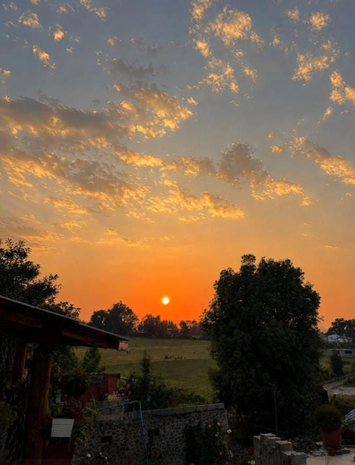

Un recorrido por la naturaleza, historia y encanto de nuestro municipio.

"Lugar en el que puedes ir a tomar un descanso para despejar tu mente."
En el corazón de Valle de Bravo, el Kiosco es el punto donde todos se encuentran. Rodeado de árboles, bancas y una fuente, es el lugar perfecto para sentarte un rato, respirar aire fresco y despejar tu mente mientras miras pasar la vida del pueblo, ideal para descansar después de caminar por el centro y disfrutar de una tarde tranquila.

"Mirador con vista panoramica del valle y montañas de Valle de Bravo."
La Huerta es un mirador que te regala una de las vistas más bonitas de Valle de Bravo, desde ahí puedes ver todo el valle, las montañas y el lago a lo lejos, entre pinos y aire fresco. Es un lugar para tomar fotos, respirar profundo y sentir la calma que solo la naturaleza te puede dar.

"Vista aérea del lago de Valle de Bravo y sus casas entre la vegetación."
La Peña te muestra Valle de Bravo desde las alturas, con una vista aérea del lago azul y las casas escondidas entre la vegetación, es un lugar que combina naturaleza, tranquilidad y unas fotos espectaculares, perfecto para quienes aman admirar el paisaje y sentir que están por encima de todo.

"Un lugar donde las montañas abrazan al pueblo y cada atardecer cuenta una historia."
Godínez Tehuastepec es un pueblo donde las montañas abrazan cada rincón y cada atardecer cuenta una historia. Con su cerro imponente, su cielo lleno de nubes y su ambiente tranquilo, es ideal para desconectarte y conocer la vida del campo, un lugar que te hace sentir en casa, aunque sea la primera vez que lo visitas.

"Parroquia de San Francisco de Asís con sus dos torres de cantera."
El Centro de Valle de Bravo es el alma del pueblo, con su hermosa Parroquia de San Francisco de Asís y sus dos torres de cantera que se ven desde lejos. Sus calles empedradas, sus tiendas y su ambiente cálido te invitan a caminar sin prisa, es el lugar donde se junta la historia, la cultura y la alegría de la gente de Valle.

"Atardecer naranja sobre el campo en la comunidad de Palito Verde."
Palito Verde es una comunidad que te enamora con sus atardeceres naranjas sobre el campo. Cuando el sol baja entre los árboles, todo se pinta de dorado y el silencio se siente bonito, es el lugar perfecto para terminar el día, tomar fotos y disfrutar de la paz del campo.